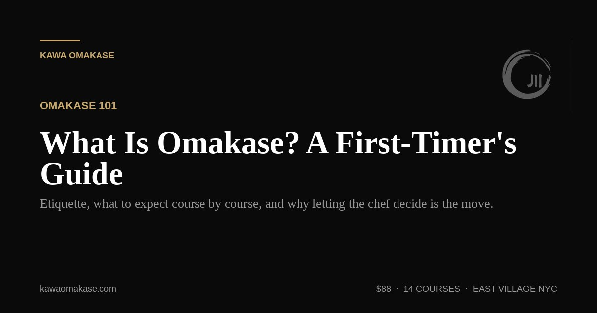

Omakase 101
What Is Omakase? A First-Timer's Guide to Dining at the Sushi Counter
"Omakase" means "I leave it up to you." We walk through the etiquette, what to expect course by course, and why surrendering the menu to the chef is the best decision you'll make.
Read More